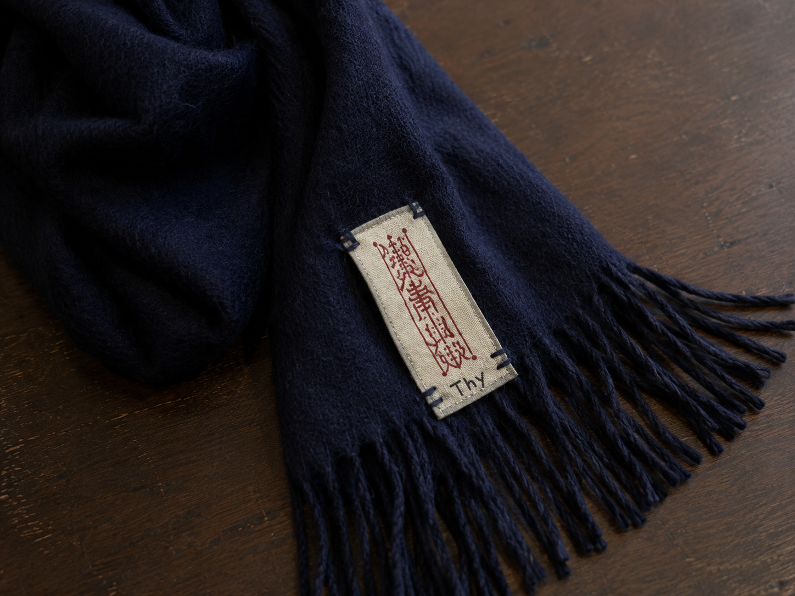

※画像は拾得物を撮影したものです。
保管中
マフラー
- 拾得日
- 2026年7月20日
- 拾得場所
- 月瀬駅前商店街 南側通路
- 色
- 黒に近い濃紺
- 特徴
- 厚手の無地。端部に小さな札が縫い付けられています。
- 保管期限
- 2026年10月20日まで
LOST AND FOUND
落とし物の受け取りには、品物の特徴や落とした場所などの確認が必要です。月瀬駅前商店街振興会窓口までお問い合わせください。

※画像は拾得物を撮影したものです。
保管中
月瀬駅前商店街振興会 事務局
受付時間：平日 10:00〜17:00
受け取りの際は、本人確認ができるものをお持ちください。